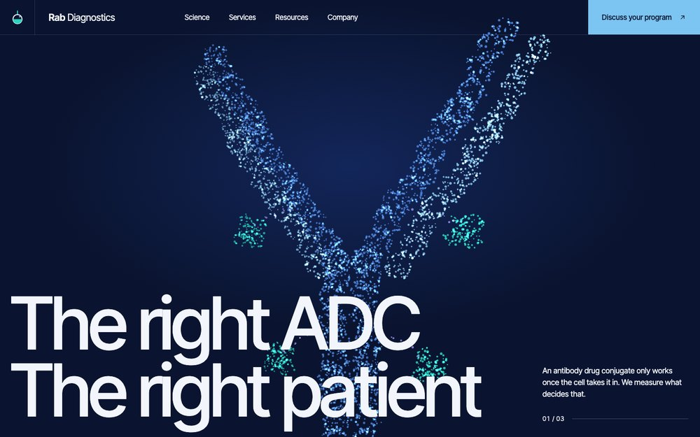

RabDx Concept
A particle antibody with its drug payloads that breaks into tissue cores, then into two patient groups, as you scroll. Colours and the one-line logo are proposals.
View ConceptWeb design system, Figma pages and a CMS-driven Webflow build
for Rab Diagnostics
One person from design system to launch, so nothing is lost between design and build.
I design and build myself. The Figma component that gets approved in Phase 1 is the same one I wire up in Webflow, so there is no handover gap and no drift between design and site.
Phase 1 extends your Brand Manual only where it is silent: pixel type scale, spacing, buttons, forms, cards, icons and the data-visualisation palette. Colors, ratios, logo rules and tone stay as written. Every text and background pair is checked against WCAG AA.
Your team is tested on one thing: adding a webinar, paper or poster without touching layout. The CMS and components are built around that.
Four fixed prices, one per Upwork milestone.
| Phase | Weeks | Fixed price |
|---|---|---|
| 1 · Web design systemRound 1 feedback 11–13 Nov, round 2 on 17 Nov | 1.5 | $600 |
| 2 · Page designGroup A: 17–19 Nov, 23 Nov. Group B: 24–26 Nov, 30 Nov | 2.5 | $2,400 |
| 3 · Webflow build on stagingRound 1 feedback 1–3 Dec, round 2 on 4 Dec | 2.5 | $3,000 |
| 4 · Launch and handoverGo-live review on 7 Dec, then 30 days of bug fixes | 0.5 | $500 |
| Optional · Webflow Agent InstructionsQuoted separately | – | $300 |
| TotalStart Mon 9 Nov 2026 · Launch Mon 7 Dec · Safe date Mon 14 Dec | $6,500 |
Extra feedback rounds are $50 per hour.
What the dates rely on.
Feedback within 3 business days on round 1 of every review. Round 2 is a short confirmation round of 1 business day.
All copy, images, papers, posters and recordings by 20 Nov. HubSpot, Webflow and Search Console access by 16 Nov.
Phase 1 signed off by 17 Nov, so Phases 2 and 3 can build on it.
Page designs are reviewed in two groups. A: homepage, services, science, about, contact and the other core pages. B: blog, webinar, paper and poster templates, the gated flow and the prototype.
Two rounds per checkpoint: design system, group A, group B and staging with real content.
The phases overlap on purpose: page designs start while the design system is in review, and the Webflow setup starts once Phase 1 is signed off. 7 December has no slack. If a review runs long or content arrives late, launch moves to Monday 14 December.
To hold 7 December I need content by 20 Nov and round 2 answers within 1 business day. I work 30 hours a week, about 40 from 16 Nov, in Central European Time, and can work weekends when needed.
Start date
Launch
Safe date
The 30 days of bug fixes run from launch, after the last bar above.
A first look at how a RabDx homepage hero could feel.

A particle antibody with its drug payloads that breaks into tissue cores, then into two patient groups, as you scroll. Colours and the one-line logo are proposals.
View ConceptDesigned and built by me, end to end, including third-party integrations. None are life science. These are the closest B2B, trust-led, content-heavy sites.

ISO 27001 / SOC 2 certification consultancy for B2B SaaS clients worldwide. Closest in tone: restrained and trust-led.
View Website
Institutional crypto investment platform with complex portfolio filtering across 200+ companies. Closest on CMS depth.
View Website
Creative concept site for a NY branding agency. Shows the editorial and motion range.
View WebsiteBuilt so your team adds content without touching layout.
Collections: Webinars, Papers, Posters, Blog, Authors and Topics.
Shared fields on every item: title, slug, summary, topics, authors, date, and required SEO title, SEO description and OG image.
Per type: webinars have speakers, date and recording. Papers have journal, DOI and PDF. Posters have conference and PDF.
Gating: every asset has a public, indexable summary page. One reusable HubSpot form per content type sits in front of the file, using the official HubSpot app for Webflow.
Tracking: a hidden field records which asset was requested, taken from the item slug, so each submission in HubSpot shows the asset.
Editing: editors fill CMS fields and nothing else. Layout lives in components.
Client-First by Finsweet.
It is documented and widely used, so your team or any future developer can look up how things are named instead of reverse-engineering my choices.
It keeps classes consistent across 16 pages and 6 collections, which matters most when real content goes in.
It pairs well with reusable components, so a change in one place updates every page. That is what makes the add-a-webinar test pass.